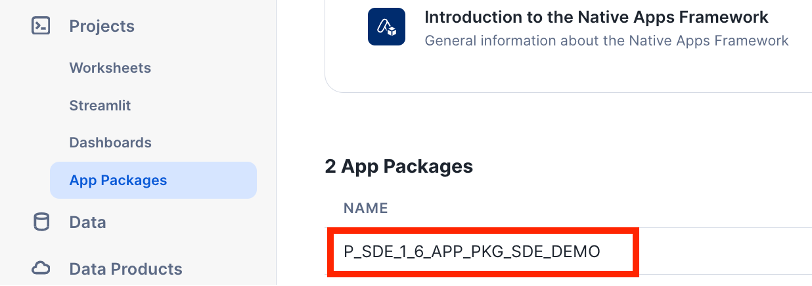
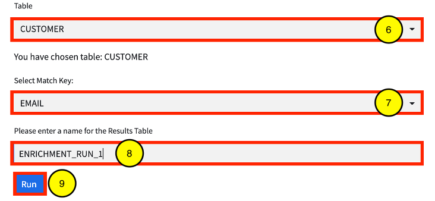

This guide will show you how to deploy the ACF and build a demo Native App with controls and limits.
The ACF is an accelerator, allowing you to easily integrate your existing Snowflake application logic into a controllable, auditable Native App. It gives you the ability to dynamically control what logic, functionality, AI/ML, and/or data your consumers receive using rules implemented at either the record or query level, ensuring consumers do not gain access to proprietary information. Once your Native App is installed, the ACF will track and log each consumer's usage and send that data back to you in near real-time. This allows you to quickly spot any usage or setup issues and rectify them immediately.
The rest of this Snowflake guide walks you through deploying the ACF and demo data/application logic, setting the Native App Limits, listing the demo Native App, and using the app, as a consumer.
Prerequisites
- Familiarity with SQL, SnowSQL, Native Apps, Event Tables, and Streamlit
What You'll Learn
- How to create an Event Account
- How to use the ACF Streamlit App (App Control Manager) to set Native App limits and which functionality consumers can access
- How to build and list a demo Native App, using the ACF
- How events are collected and used to update consumer metadata (i.e. the number of records processed)
What You'll Need
- SnowSQL Installed
- An Integrated Development Environment (IDE) Installed. VSCode is recommended.
- Three (3) Snowflake accounts, each with
ACCOUNTADMINprivileges (ideally in the same cloud/region)- One account will serve as the main account, where the ACF is deployed
- One account will serve as an event account, where consumer events from the Native Apps are shared to.
- The event account uses the Listing API, which is in Public Preview (PuPr). Visit https://other-docs.snowflake.com/en/progaccess/listing-progaccess-about for more information.
- Once this account is created, it will be set as the event account for the cloud region, by executing the following in the Snowflake Org account, as
ORGADMIN CALL SYSTEM$SET_EVENT_SHARING_ACCOUNT_FOR_REGION('', 'PUBLIC', ' '); - The account region can be found by executing
SELECT CURRENT_REGION(); - The account name can be found by executing
SELECT CURRENT_ACCOUNT_NAME();
- The account region can be found by executing
- One account will serve as a consumer account, to install the demo Native App.
What You'll Build
- A Native App that tracks consumer usage and enforces the limits set in the ACF.
The code used in this guide is hosted in github. You can download the code as a ZIP from GitHub or use the following git command to clone the repository.
git clone https://github.com/Snowflake-Labs/sfguide-application-control-framework.git
After downloading you will have a folder sfguide-application-control-framework containing all the code needed to deploy the ACF. Open the folder in VSCode to review the project.
The first step is to set up an event account for each region the native app will be deployed. The script referenced below creates an event table (if one has not already been created), streams, tasks, and data listings to share consumer native app events from the event account to the ACF (main) account.
Prerequisites
The event account must have been created for each region the native app will be deployed, along with setting each account as the event account for the region. Each event account must be enrolled in the Listing API Private Preview. Please see the **What You'll Need section for more details.
Script Execution
- The ACF code project includes the
config/config_events_aws_us_west_2.txtfile for the event account setup. Update this file, replacing the values in the config file accordingly. Rename the config file, replacingaws_us_west_2, with your account's region.
Configuration Parameters
- DIR - the URI where the
application_control_frameworkroot directory resides on the provider's local machine.- NOTE: The URI formatting differs depending on the provider's local operating system:
- Linux/MacOS:
- The path must include the initial forward slash in the path (e.g.
/Users/mhenderson/Documents/GitHub). - If the directory path and/or filename includes special characters, the entire URI must be enclosed in single quotation marks.
- The path must include the initial forward slash in the path (e.g.
- Windows:
- You must include the drive and backslash in the path (e.g.
C:\Users\mhenderson\Documents\GitHub). - If the directory path and/or filename includes special characters, the entire file URI must be enclosed in single quotes. Note that the separator character is a forward slash (/) in enclosed URIs (e.g.
C:\Users\mhenderson\Documents\GitHub Reposfor a path in Windows that includes a directory named GitHub Repos).
- You must include the drive and backslash in the path (e.g.
- Linux/MacOS:
- NOTE: The URI formatting differs depending on the provider's local operating system:
- ORG_NAME - the organization provider's Snowflake account belongs (this can be found by executing the
SELECT CURRENT_ORGANIZATION_NAME()command)- NOTE: only required for the config_events.txt file.
- ACF_ACCOUNT_NAME - the name of the provider's Snowflake where the ACF will be deployed (this can be found by executing the
SELECT CURRENT_ACCOUNT_NAME()command).- NOTE: only required for the config_events.txt file.
- ACF_ACCOUNT_LOCATOR - the account identifier for provider's Snowflake account where the ACF will be deployed (this can be found by executing the
SELECT CURRENT_ACCOUNT()command). - EVENTS_ACCOUNT_LOCATOR - the account identifier for provider's Snowflake account where ACF events will be collected. (this can be found by executing the
SELECT CURRENT_ACCOUNT()command).- NOTE: only required for the config_events.txt file.
- APP_CODE - an abbreviated representation for the name of the app.
- NOTE: for this QuickStart, please use SDE.
Example Config:
DIR=/Users/mhenderson/Documents/GitHub
ORG_NAME=SFPSCOGS
ACF_ACCOUNT_NAME=PS_WLS_COLLAB_PROVIDER
ACF_ACCOUNT_LOCATOR=CDB65519
EVENTS_ACCOUNT_LOCATOR=KDB59543
APP_CODE=SDE
- Using SnowSQL, execute the script to set up the event account:
./event_acct/setup/setup.sh config/config_events_<REGION>.txt
Where <REGION> = the cloud/region where the event account is being configured.
The second step is to deploy the ACF to the main account. This account is different from an event account and will be where the ACF will reside and be managed.
The ACF includes all of the objects required to manage ACF functionality. In addition, this script also deploys the App Control Manager, the Streamlit UI that is used to perform such actions as define custom controls and rules, create app package versions, onboard consumers, etc.
Prerequisites
Complete the previous step, Event Account Setup.
Script Execution
- The ACF code project includes the
config/config_acf.txtfile for the ACF account setup. Update this file, replacing the values in the config file accordingly.
Configuration Parameters
- DIR - the URI where the
application_control_frameworkroot directory resides on the provider's local machine.- NOTE: The URI formatting differs depending on the provider's local operating system:
- Linux/MacOS:
- The path must include the initial forward slash in the path (e.g. /Users/mhenderson/Documents/GitHub.
- If the directory path and/or filename includes special characters, the entire URI must be enclosed in single quotation marks.
- Windows:
- You must include the drive and backslash in the path (e.g. C:\Users\mhenderson\Documents\GitHub).
- If the directory path and/or filename includes special characters, the entire file URI must be enclosed in single quotes. Note that the separator character is a forward slash (/) in enclosed URIs (e.g. ‘C:\Users\mhenderson\Documents\GitHub Repos' for a path in Windows that includes a directory named GitHub Repos).
- Linux/MacOS:
- NOTE: The URI formatting differs depending on the provider's local operating system:
- ACF_ACCOUNT_LOCATOR - the account identifier for provider's Snowflake account where the ACF will be deployed (this can be found by executing the
SELECT CURRENT_ACCOUNT()command). - APP_CODE - an abbreviated representation for the name of the app.
- NOTE: for this QuickStart, please use SDE.
Example Config:
DIR=/Users/mhenderson/Documents/GitHub
ACF_ACCOUNT_LOCATOR=CDB65519
APP_CODE=SDE
- Using SnowSQL, execute the script to set up the ACF account:
./main_acct/setup/setup.sh config/config_acf.txt
Once the ACF has been deployed, the shares from the event account(s) can be mounted in the ACF account. The following step details how to mount the share from each event account set up from.
Prerequisites
Complete the previous step, ACF Account Setup.
Instructions
- In the ACF account, log into Snowsight.
- Once logged in, if not at the Snowsight home screen, click the Back button, in the top left area of the UI, to open the left navigation menu.

- Switch to the P_SDE_ACF_ADMIN role, by clicking the drop-down in the bottom left area of the UI, then hovering over the Switch Role menu item.
- Click Data Products, then Private Sharing, then Get.

- Click Get (NOTE: do not rename the database).

- Create a stream and tasks to stream events from each mounted event database to the EVENTS_MASTER table.
USE ROLE P_SDE_ACF_ADMIN;
USE WAREHOUSE P_SDE_ACF_WH;
CALL P_SDE_ACF_DB.EVENTS.STREAM_TO_EVENT_MASTER(TO_ARRAY('<EVENT_DBS>'));
<EVENT_DBS> = the event database created in Step 5.
The ACF also comes with a set of scripts that creates the provider's dev environment. This dev environment includes the application logic functions and/or procedures to be included in the Native App. In addition, the dev environment also includes the objects required to test the application functions/procedures locally, to ensure desired functionality, before building the native app.
Prerequisites
Complete the previous step, Mount the Event Shares.
Script Execution
- Using SnowSQL, execute the script to set up the dev environment in the ACF account:
./main_acct/dev_env/setup/setup.sh config/config_acf.txt
The ACF also comes with a set of scripts that creates objects in the provider's dev environment to build a demo data enrichment app. The demo app includes sample source graph data, a function that can be shared with the consumer, and a stored procedure that enriches consumer data with data from the source graph.
Prerequisites
Complete the previous step, Dev Environment Setup.
Script Execution
- Using SnowSQL, execute the script to set up the dev environment in the ACF account:
./main_acct/demo_app/setup/setup.sh config/config_acf.txt
The ACF includes the App Control Manager, a Streamlit UI available in the provider account. The App Control Manager allows the provider to easily build and manage an app built on the ACF, manage consumers, and remove the ACF if/when desired.
The App Control Manager can be accessed via the following steps:
- In the ACF account, log into Snowsight.
- Once logged in, if not at the Snowsight home screen, click the Back button, in the top left area of the UI, to open the left navigation menu.
- Switch to the P_SDE_ACF_ADMIN role, by clicking the drop-down in the bottom left area of the UI, then hovering over the Switch Role menu item.

- Click Projects » Streamlit, then P_SDE_APP_CONTROL_MANAGER.


The demo app is a simple data enrichment app that enriches a consumer's dataset with attributes from the provider's dataset, when the records have the same email address.
Create the Application Package
The native app's application package consists of views of the native app's source data, along with views of the required tables used to enforce the rules defined in the ACF and collect logs/metrics. In this demo, an application package will be created:
- In the App Control Manager, click Manage App » App Package » Create.

- Enter SDE_DEMO in the Application Package Name text field. This name will be prefixed by: P_SDE_APP_PKG_.
- Select the P_SDE_SOURCE_DB_DEV database from the Select Database drop-down.
- Select the DATA schema from the Select Schema drop-down
- Select the P_SDE_SOURCE_DB_DEV.DATA.CUSTOMER table from the Select Table(s)/View(s) drop-down.
- Click Create.

Create a Version for the Application Package
Once the application package is created, the application functions/procedures are tied to the application package by creating a version and a patch. In this demo, the App Control Manager will be used to create a new version and patch.
- In the App Control Manager, click Manage App » App Package » Versions.

- Select P_SDE_APP_PKG_SDE_DEMO from the Select Application Package drop-down.
- Select CREATE from the Create, Patch, or Drop Version drop-down.
- Enter a v1_0_0 in the Version Name field.

- For this demo, select FREE from the Select App Mode drop-down
- Select Y from the Enforce Limits drop-down. By default, limits should be enforced, but this can be set to N if limit enforcement should be turned off (i.e. during testing).
- Select DEV from the Environment drop-downs to pull the Streamlit and template files from the dev environment.

- Select the P_SDE_SOURCE_DB_DEV database from the Select Database drop-down.
- Select the FUNCS_APP schema from the Select Schema drop-down.
- Select the P_SDE_SOURCE_DB_DEV.FUNCS_APP.JS_FACTORIAL(FLOAT) function from the Select Function(s) drop-down.
- Select the Accessible checkbox next to the function under Selected Functions to make the function accessible to the consumer.

- Select the P_SDE_SOURCE_DB_DEV database from the Select Database drop-down.
- Select the PROCS_APP schema from the Select Schema drop-down.
- Select the P_SDE_SOURCE_DB_DEV.PROCS_APP.ENRICH(VARCHAR,VARCHAR,VARCHAR,VARCHAR) procedure from the Select Procedure(s) drop-down.
- Select the Input Table checkbox next to the procedure under Selected Procedures.

- Click the CREATE button.
Release Patch
To grant consumers access to the latest version/patch, the provider must create a release for the application package. The following steps detail how to release an application package's version/patch:
- In Snowsight, click Projects » App Packages. Select the P_SDE_APP_PKG_SDE_DEMO application package created in the previous section.

- Click Release Patch.

- Select V1_0_0 patch 0 from the Patch to release drop-down.
- Choose Set this patch to default.
- Click Save.

Once the application package has a released version and patch, the native app is ready to be privately listed. For instructions on how to create a Private Listing for the native app and add the demo consumer account, visit the Create a Listing for Your Application section: https://docs.snowflake.com/en/developer-guide/native-apps/tutorials/getting-started-tutorial#publish-and-install-your-application.
In the demo consumer account added to the listing created in Create the Native App Listing section, install the native app available from the private listing. For instructions on how to install a native app, visit the Install the Application section https://docs.snowflake.com/en/developer-guide/native-apps/tutorials/getting-started-tutorial#id6.
With each installation, the consumer is barred from using the native app until the consumer has executed a series of commands, including sharing events with the provider. These commands are located in the native app's Readme.
- In Snowsight, click Data Products » Apps, under the Installed Apps section, click the native app installed in the previous section.

- Once loaded, the Streamlit UI will display the following error message:

- Click the icon in the top right of the page.

- Make note of the NOTES section of the Readme. Hover over and click the Open in Worksheets button.

- In the new worksheet, replace the macros specified in the Readme with the appropriate values. Once the macros are replaced, run all commands.
- Open the native app. The Streamlit UI will display the warning message below. It will take a few minutes for the native app to be enabled.

Once the native app has been enabled, the consumer can now use the app to enrich data. Sample data was created during executing the Readme commands. The following steps detail how to use the app to enrich data:
- Open the app. Once the app is enabled, the warning message is removed.
- Click Select Table. Since this is the first time using the app, it needs to be granted privileges to the sample data table.

- The app's security window will appear. Click ** Select Data**.

- Select C_SDE_HELPER_DB.SOURCE.CUSTOMERS, then click Done.

- In the security window, click Save.
- Verify that the CUSTOMER table is selected from the Table drop-down.
- Select EMAIL from the Match Key drop-down.
- Enter a name for the results table in the Please enter a name for the Results Table field.
- Click Run.

- Once complete, the following message will briefly appear. In addition a new entry will be added to the Run History section.


- If desired, the output table can be inspected. In a worksheet, execute the following command:
SELECT * FROM <APP_NAME>.RESULTS_APP.<TABLE_NAME> WHERE email IS NOT NULL LIMIT 100;
NOTES:
- <APP_NAME> = the name of the app
- <TABLE_NAME> = the name of the results table entered in.
Reach the Five Requests Limit Then Increase the Limit
By default, the ACF sets limits of the FREE version of the app to five requests. Once the limit is reached, the app is no longer usable, until the limit is increased by the provider in the App Control Manager.
Attempt to Exceed Limit
In the app, make five requests to reach the limit, then attempt a sixth, which will fail.

Increase the Limit
Once the limit is reached, increase the consumer's request limit in the App Control Manager.
- In the App Control Manager, click Manage Consumers » Manage.
- Select the Consumer from the Select Consumer drop-down. The consumer name will have a FREE_ prefix, followed by the consumer's Snowflake account name.
- Select the limit control from the Select Consumer Controls to Update drop-down
- In the New Value field, enter 10, then press Enter.
- Click Update.

Make a New Request
In the native app in the consumer's account, attempt to make a new request. Verify that the request is allowed and is successful.
Consumer Usage of the App is Blocked, when Disabled
The App Control Manager allows the provider to control a consumer's access.
Disable the Consumer
In the App Control Manager, disable the consumer.
- In the App Control Manager, click Manage Consumers » Manage.
- Select the Consumer from the Select Consumer drop-down. The consumer name will have a FREE_ prefix, followed by the consumer's Snowflake account name.
- Select the enabled control from the Select Consumer Controls to Update drop-down
- In the New Value field, enter N, then press Enter.
- Click Update.
Attempt to Use the Native App
In the consumer account, relaunch the app and note that the consumer's access has been revoked.

Re-enable the Consumer
Repeat the steps in the Disable the Consumer section, but set the enabled value back to Y. Then relaunch the app in the consumer's account to verify that usage has been restored.
- In the App Control Manager, click Manage Consumers » Manage.
- Select the Consumer from the Select Consumer drop-down. The consumer name will have a FREE_ prefix, followed by the consumer's Snowflake account name.
- Select the enabled control from the Select Consumer Controls to Update drop-down
- In the New Value field, enter N, then press Enter.
- Click Update.
You've performed the following:
- Successfully built and deployed a Native App with consumer controls and limits, set via the ACF.
- Verified that the limits are enforced when the consumer hits the limits set.
- Updated the limits and verified that they are applied for the consumer in real-time.
- Disabled the consumer in the ACF and verified that the consumer cannot use the app.
To get more comfortable with this solution, continue to toggle the limits set for the consumer, add additional functionality to the native app and set the allowed_procs values accordinglt.
What we've covered
- How to create an Event Account
- How to use the ACF Streamlit App (App Control Manager) to set Native App limits and which functionality consumers can access
- How to build and list a demo Native App, using the ACF
- How to update consumer metadata and verify that the changes are applied immediately.